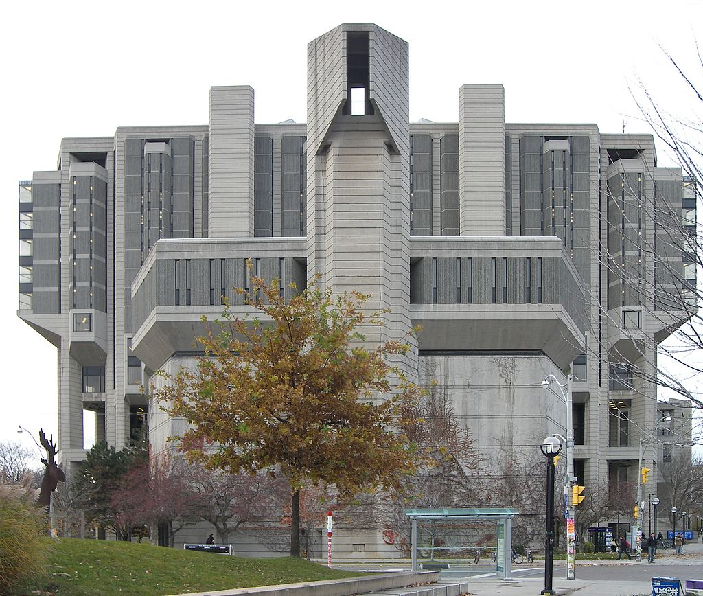
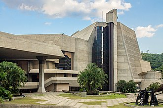

a arquitectura brutalista es un estilo arquitectónico que surgió durante la década de 1950 en el Reino Unido en los proyectos  de reconstrucción de la era de la posguerra. Los edificios brutalistas se caracterizan por construcciones minimalistas que muestran los materiales de construcción desnudos y los elementos estructurales sobre el diseño decorativo. El estilo comúnmente hace uso del hormigón o ladrillo vistos, sin lucir ni pintar, recurre a formas geométricas angulares y a una paleta de colores predominantemente monocromática; También se incluyen otros materiales, como acero, madera y vidrio."
"Descendiente del movimiento moderno, se dice que el brutalismo es una reacción contra la nostalgia de la arquitectura en la década de 1940. Derivado de la frase sueca nybrutalism, el término «Nuevo brutalismo» fue utilizado por primera vez por los arquitectos británicos Alison y Peter Smithson por su enfoque pionero del diseño. El estilo se popularizó aún más en un ensayo de 1955 del crítico de arquitectura Reyner Banham, quien también asoció el movimiento con las expresiones francesas «béton brut» ('hormigón a la vista o en bruto') y «art brut» ('arte en bruto'). El estilo, desarrollado por arquitectos como los Smithson, el húngaro Ernő Goldfinger y la firma británica Chamberlin, Powell & Bon, fue presagiado en parte por el trabajo moderno de otros arquitectos como el franco-suizo Le Corbusier, el estonio-estadounidense Louis Kahn, el germano-estadounidense Mies van der Rohe o el finlandés Alvar Aalto."